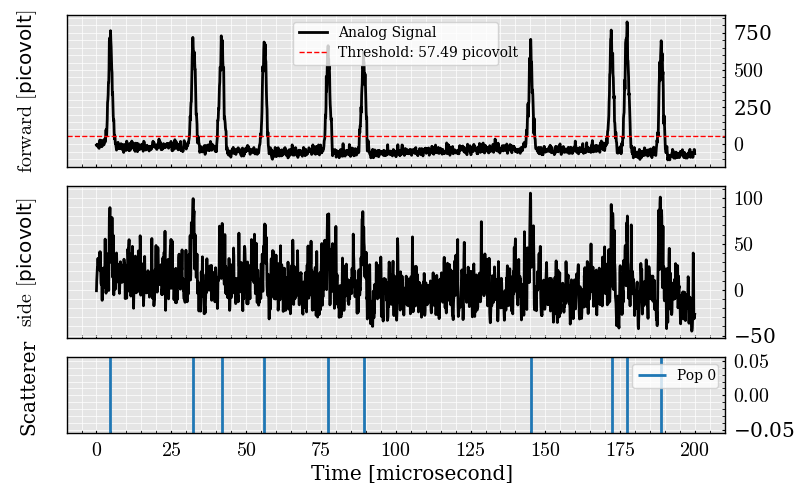

Note
Go to the end to download the full example code.
Flow Cytometry Simulation: FacsCanto System#
This tutorial demonstrates how to set up and run a flow cytometry simulation using the FacsCanto instance from the FlowCyPy library. It includes defining a particle population, configuring the flow cytometer, running the simulation, and visualizing the results.
Step 0: Global Settings and Imports#
from FlowCyPy.units import ureg
from FlowCyPy.presets.flow_cytometer import FacsCanto, SampleFlowRate, SheathFlowRate
from FlowCyPy.fluidics import populations, distributions
diameter = distributions.RosinRammler(
scale=60 * ureg.nanometer,
shape=150,
)
medium_refractive_index = 1.33
refractive_index = distributions.Normal(mean=1.44, standard_deviation=0.002)
population_0 = populations.SpherePopulation(
name="Pop 0",
concentration=5e9 * ureg.particle / ureg.milliliter,
diameter=diameter,
medium_refractive_index=medium_refractive_index,
refractive_index=refractive_index,
)
facs_canto = FacsCanto(
sample_volume_flow=SampleFlowRate.MEDIUM.value,
sheath_volume_flow=SheathFlowRate.DEFAULT.value,
optical_power=200 * ureg.milliwatt,
threshold="3sigma",
include_shot_noise=True,
include_rin_noise=True,
background_power=0.01 * ureg.nanowatt,
)
facs_canto.add_population(population_0)
facs_canto.dilute_sample(factor=100)
run_record = facs_canto.run(run_time=0.2 * ureg.millisecond)
run_record.plot_analog()

<Figure size 800x500 with 3 Axes>
Total running time of the script: (0 minutes 0.534 seconds)